제품 기능으로서의 AI
FastAPI + OpenAI API 추천 서버관심 카테고리와 위시리스트를 바탕으로 FastAPI 추천 서버와 OpenAI API를 연동해, 사용자별 맞춤 상품을 추천하는 기능을 단독으로 설계·구현했습니다.
All Pick
역할별 권한과 구매 흐름을 갖춘 쇼핑몰 서비스
팀장으로 인증/권한, 주문·결제, AI 추천, AWS 배포를 담당했습니다.
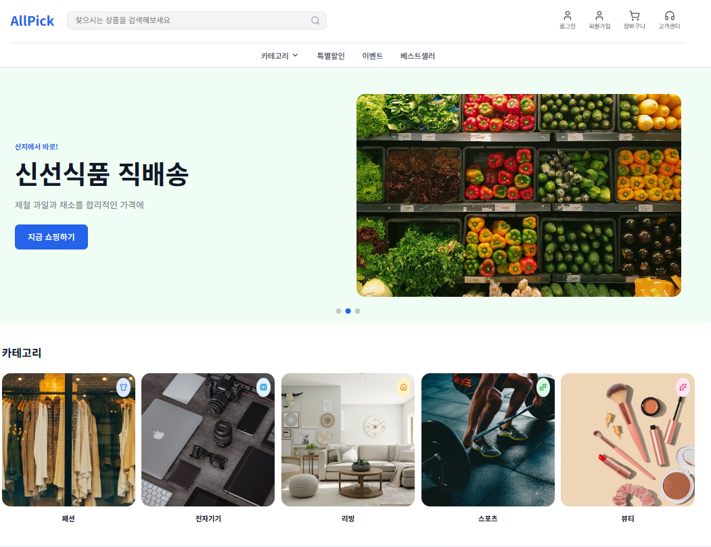
AI 활용 기록
AllPick은 Claude Code 같은 AI 코딩 도구를 개발 루프에 쓰기 이전 시기의 프로젝트입니다. PR 본문은 대부분 비어 있고 CodeRabbit 같은 AI 리뷰도 붙어 있지 않아서, 이 시기의 "AI 활용"은 개발 과정이 아니라 제품 기능 자체에 있었습니다.
제품 기능으로서의 AI
FastAPI + OpenAI API 추천 서버관심 카테고리와 위시리스트를 바탕으로 FastAPI 추천 서버와 OpenAI API를 연동해, 사용자별 맞춤 상품을 추천하는 기능을 단독으로 설계·구현했습니다.
그 이후의 변화
개발 과정 자체에 AI를 결합이후 TFT-gogo부터는 Claude Code와 AI 코드 리뷰를 개발 루프 안에서 쓰기 시작했고, Lojipsa에서는 배포 후 AI가 스스로 결과를 채점하는 LLM-as-judge까지 도입했습니다.
Design Assets
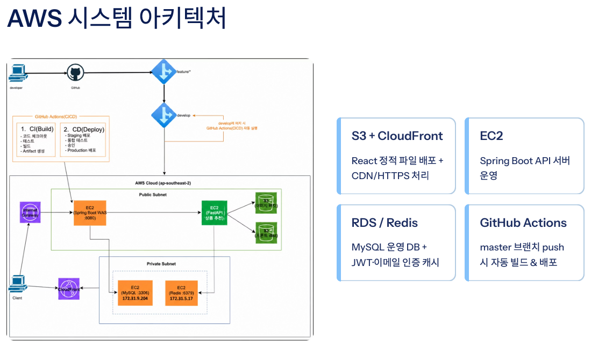
React 정적 배포, Spring Boot API 서버, MySQL·Redis, S3 이미지 저장소, CloudFront 흐름을 정리합니다.
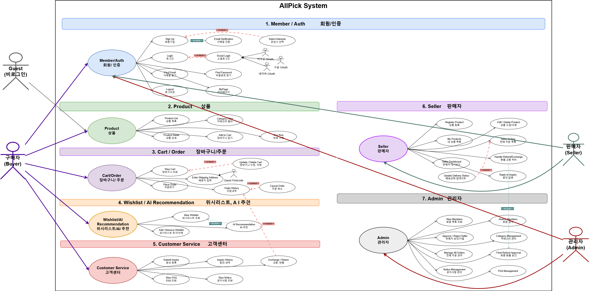
일반 회원, 판매자, 관리자 역할별 상품·주문·승인·CS 기능과 접근 범위를 구분합니다.
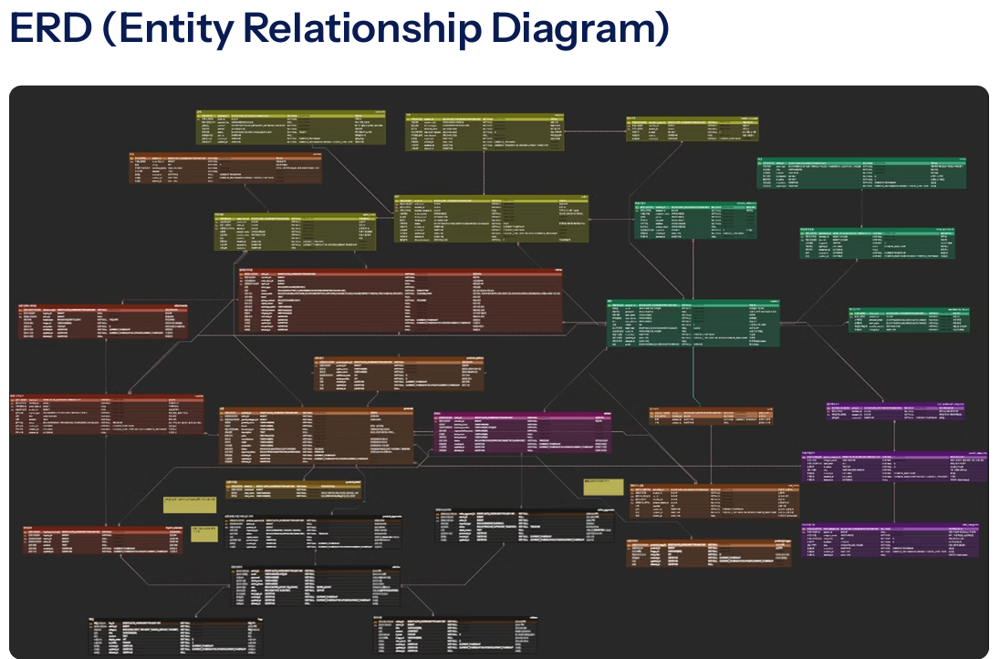
회원, 판매자, 상품, 주문, 쿠폰, 리뷰, 문의·클레임의 관계와 상태 전이를 정리합니다.
Features
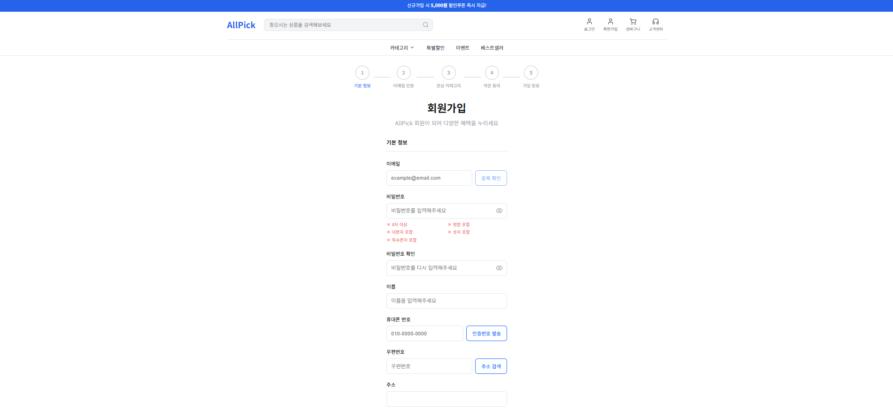
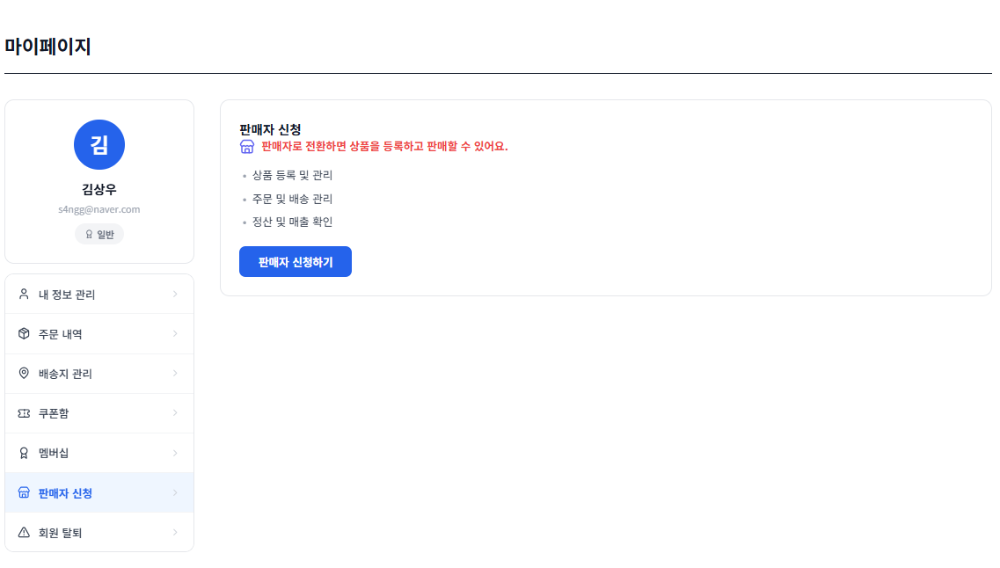
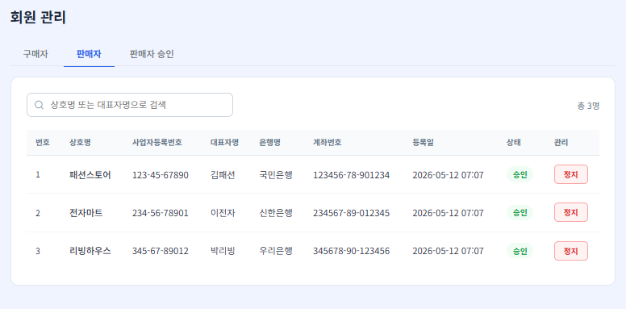
회원가입, 판매자 신청, 관리자 승인 흐름을 분리했습니다. 승인 상태에 따라 상품 등록 권한이 달라지도록 처리했습니다.
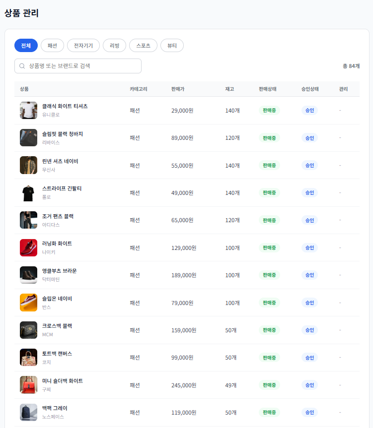

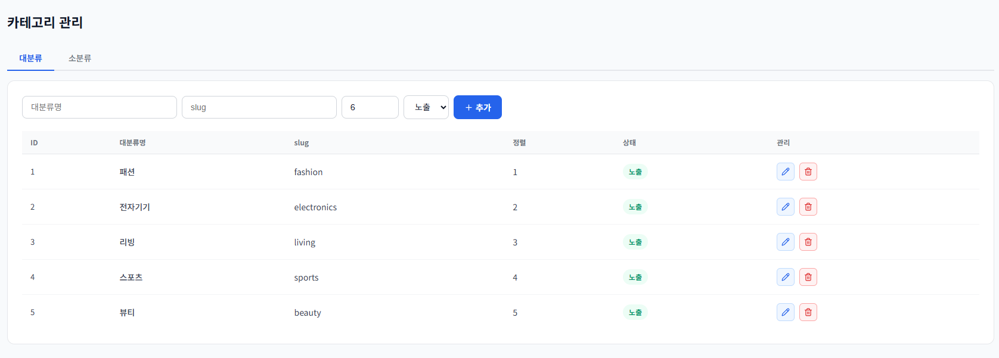
상품 승인 상태와 카테고리 노출 순서를 관리했습니다. 카테고리 기준으로 상품 목록과 상세 조회가 이어지도록 구성했습니다.
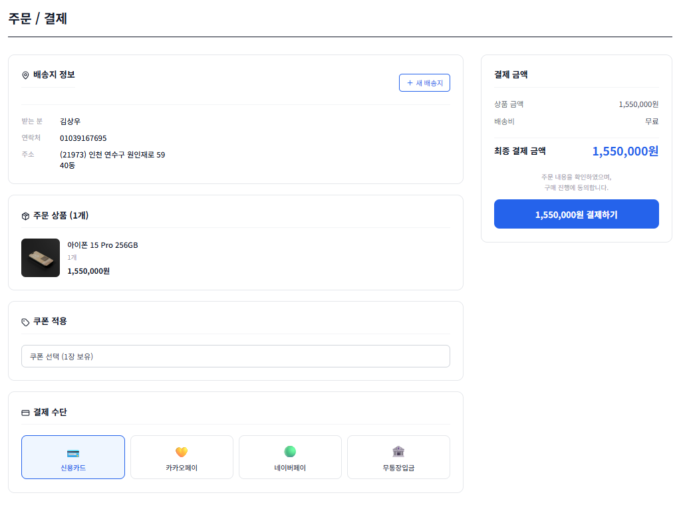
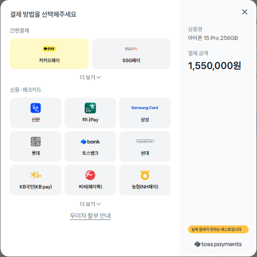
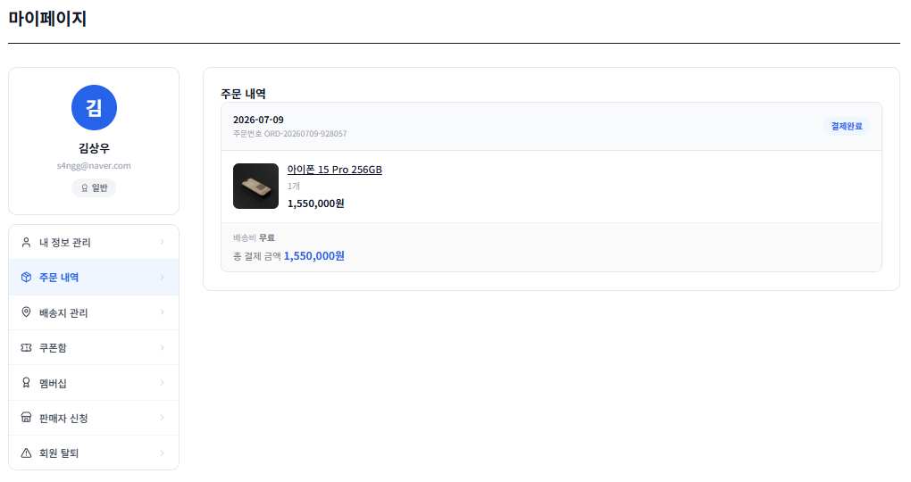
주문서 작성, Toss Payments 결제, 주문 내역 조회까지 구매 흐름을 연결했습니다.
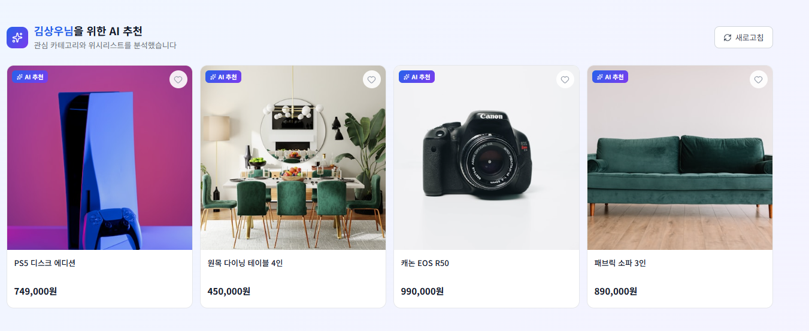
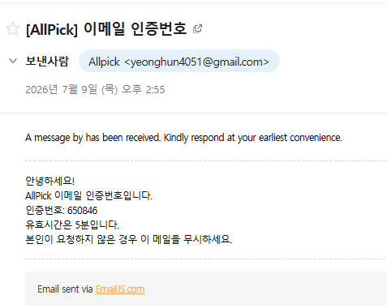
관심 카테고리와 위시리스트를 바탕으로 FastAPI 추천 서버와 OpenAI API를 연동했습니다.
Skills
Backend
Database
Frontend
Integration & Deploy
Verification
AllPick은 화면 기능과 함께 API 응답, 권한, DB 상태를 확인하며 구현했습니다.
01 / Authentication
회원, 판매자, 관리자 요청 경로별로 토큰과 권한을 분리했습니다.
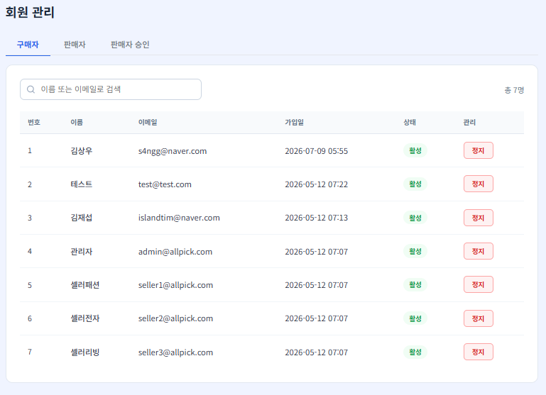
02 / Permission
승인, 주문, 환불 상태가 화면과 DB에서 같은 기준으로 바뀌는지 확인했습니다.
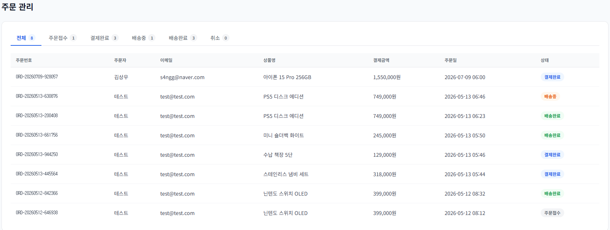
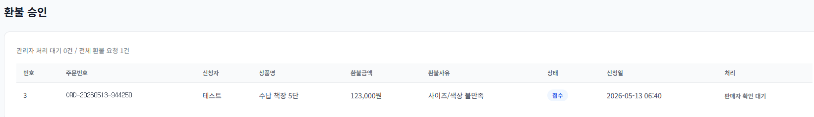
03 / AI & Integration
Toss Payments, EmailJS, FastAPI 추천 서버 연동을 요청 흐름과 실패 응답 기준으로 확인했습니다.